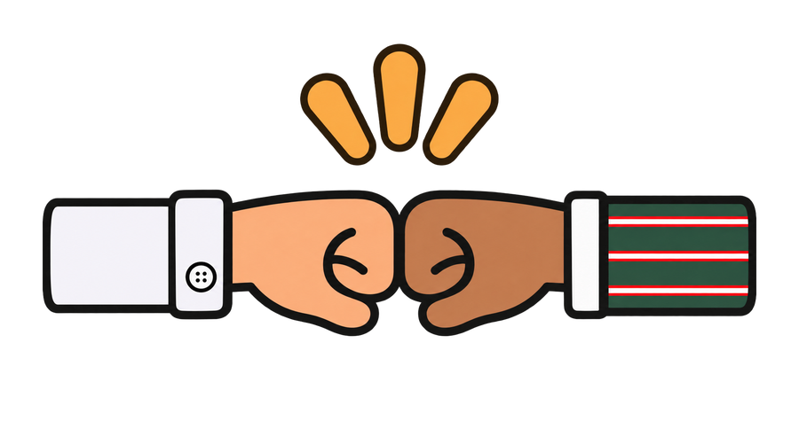
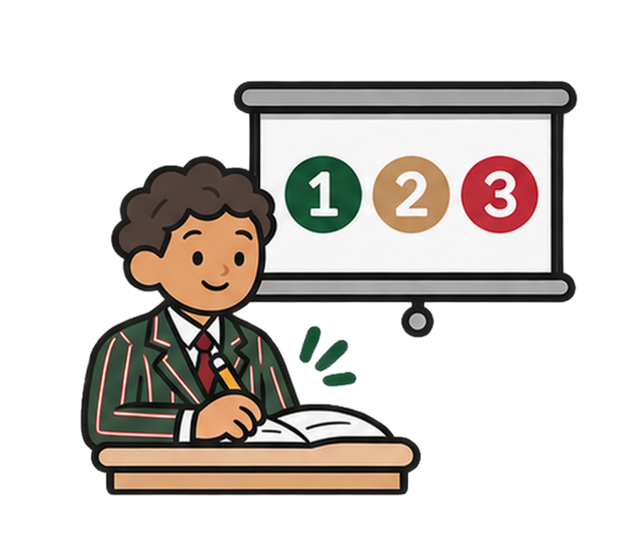

A calm, respectful mathematics class where everyone knows what to do,
learning time is protected, and effort is visible.

Our class kaupapa
Three everyday expectations sit above the lesson routines.
Manaakitanga
Be respectful
Look after the people and the space. Use names. Not ‘sir’ —
‘Excuse me, Mr McIntosh.’[3]
Ako
Be a learner
Have a go, show your thinking, and learn from mistakes. Ask for
help when you need it.
Protect learning time
Be ready
Arrive calm, follow the routines, and stay with the work so
everyone can concentrate.
The nine routines
Every lesson follows the same shape: enter, learn, and leave. Seats
are assigned. I greet students at the door[1][2][3] and dismiss them — not
the bell.
Enter
Calm and ready
Greet, stand at the assigned desk, then start the Do Now.
Learn
Focused and productive
Hands Mode, one clear page of working, and quiet maths talk.
Exit
Organised and dismissed
Show the best page, pack when invited, leave when dismissed.
Enter — calm and ready
1
Routine 1
Greet
Enter quietly.
I greet each student by name[3][6][7]. A fist bump or a wave is fine; a
wave is always OK.
2
Routine 2
Stand
Go straight to the assigned desk.
Stand quietly behind it until invited to sit.
Phones, gum and laptops stay away.
3

Routine 3
Start
The agenda and Do Now are on the board when students arrive[3][7][9].
Sit when invited.
Begin the Do Now immediately, ready to say what today’s task
is[8][10].
Learn — focused and productive
4
Routine 4
Respect Hands Mode
When I raise my hand with a finger to my lips, talking stops[4].
Leave when I dismiss the class, not when the bell rings[7].
Hands Mode, in five seconds
The raised hand is the signal. A timer or spoken cue may support
it — for example, “pens down, eyes on me”[8][9] —
but does not replace it[3][4].
Prime
Thirty seconds left. Finish the sentence[4][5].
Signal
Hand up, finger to lips.
Respond
Voices off, hand up, eyes forward.
Wait
Instruction begins when the class is ready[3][4][5][7].
“Hands Mode: voices down, eyes up.”
Devices, equipment and movement
Phones and laptops
Phones stay away for the whole lesson.
Laptops only when I ask, and only for the set task.
Equipment, gum and leaving the seat
Bring the usual maths equipment. Spare paper and pens are
available.
No gum.
Stay in the assigned seat. Ask before leaving the room[10].
If your child is late
Late students wait quietly at the door. I finish the current
instruction first[10], then they go to their seat and
start the work. I follow up privately later — no public explanation
at the door[1][5].
When things go wrong
I correct the behaviour, not the person. Reminders are calm and
brief — “short, firm, and positive”[7].
Longer conversations happen privately[1]. I name the
behaviour I want when I see it[1][3][4].
Reminder
The expected behaviour, once, clearly[4]. For example: “Voices off.
Eyes up. Hands empty.” Then I give a moment and move on[3].
Reset
If needed, we practise the routine again, without a public
argument[3][6][9].
A private kōrero
After class, we talk away from an audience: What happened? What
was the impact? What happens next? We end with a next step, and
that I believe they can do it[3][4]
Making up learning time
If learning time has been deliberately lost, it may be made up,
following school policy.
School process
Repeated or more serious issues follow school process, and I will
contact home when that is the next step[1].
3. Dowley, M., & Lovell, O. (2024). The classroom management handbook: A practical blueprint for engagement and behaviour in your classroom and beyond. John Catt Educational.
↩
5. Dowley, M. (2025, December 26). Helping boys pay attention [Fact sheet]. Society for the Psychological Study of Men and Masculinities, Division 51 of the American Psychological Association. https://www.division51.net/taskforce-on-boys-in-school↩